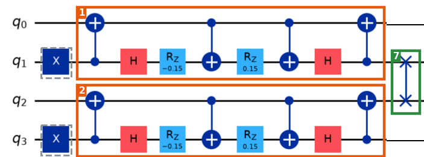

Learn · hadron circuit · brickwork, part 2
Brick 7, worked by hand on four qubits after bricks 1 and 2. States are written |q0 q1 q2 q3⟩.

From brickwork_annotated_old.png (old mass signs; this part is the same in the corrected circuit): pair gates 1 and 2, then SWAP 7 on q1 and q2.
SWAP exchanges two qubits. On hardware it is 3 CNOTs; by hand you don't need them: in every term, exchange the two bits. Each amplitude stays with its term — only the bit labels move, never the numbers.
q1 is entangled with q0 (after the pair gate), so it has no state of its own: write the joint state of every qubit involved. Brick 2 does to (q2, q3) exactly what brick 1 did to (q0, q1), so the 4-qubit state is the product of two pair-gate results:
(cos θ |01⟩ − i sin θ |10⟩)_q0q1 ⊗ (cos θ |01⟩ − i sin θ |10⟩)_q2q3 = cos²θ |0101⟩ − i sinθ cosθ |0110⟩ − i sinθ cosθ |1001⟩ − sin²θ |1010⟩
| before | amplitude | after |
|---|---|---|
| |0101⟩ | cos²θ | |0011⟩ |
| |0110⟩ | −i sinθ cosθ | |0110⟩ (both 1: unchanged) |
| |1001⟩ | −i sinθ cosθ | |1001⟩ (both 0: unchanged) |
| |1010⟩ | −sin²θ | |1100⟩ |
after SWAP: cos²θ |0011⟩ − i sinθ cosθ |0110⟩ − i sinθ cosθ |1001⟩ − sin²θ |1100⟩
Next: the electric gate (bricks 18–23).